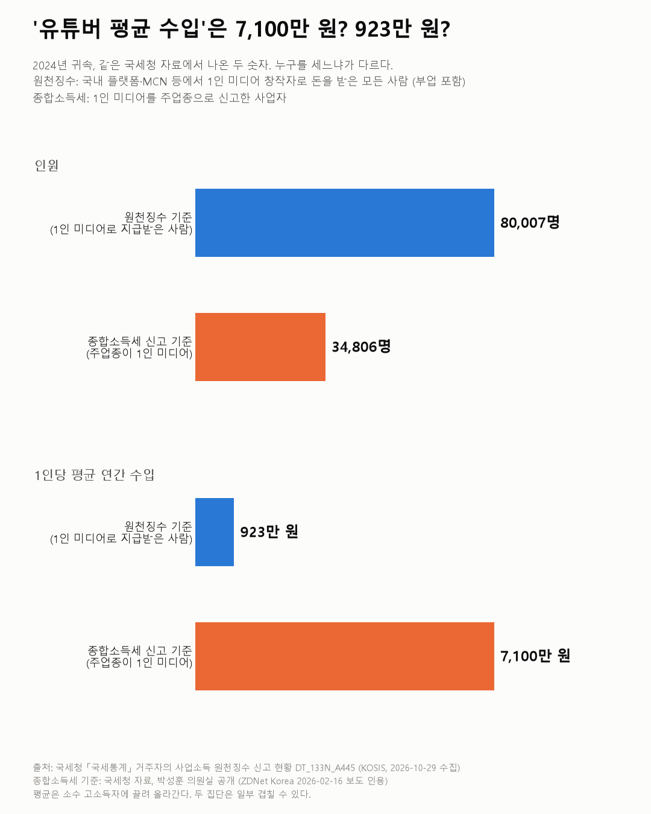
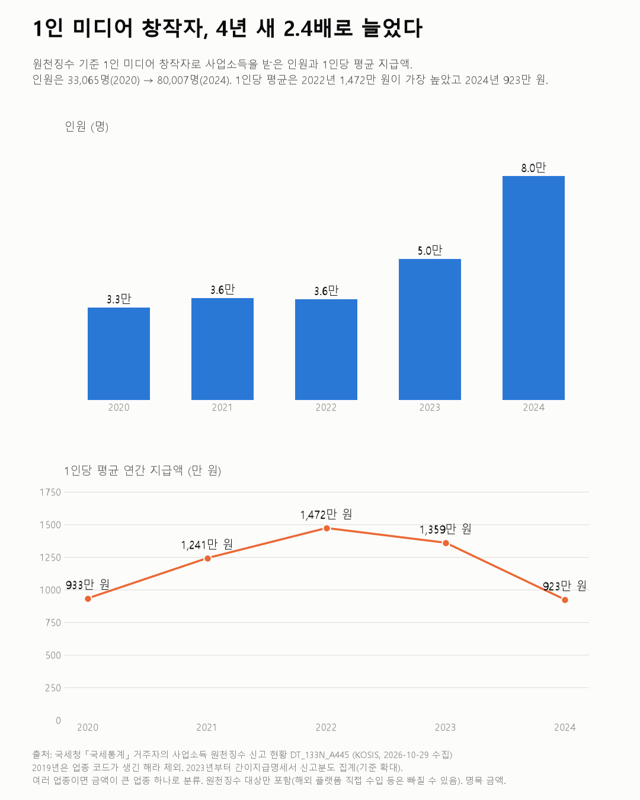
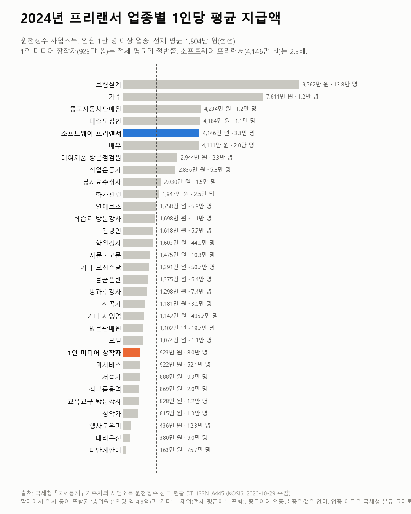

국세통계 원천징수
'유튜버 평균 수입'은 7,100만 원? 923만 원?
국세청 원천징수 통계 2020~2024

질문
1인 미디어 창작자(유튜버·스트리머 등)로 사업소득을 받는 사람은 몇 명이고, 1인당 얼마를 받나? 몇 년 새 어떻게 변했고, 다른 프리랜서 업종과 비교하면 어떤가?
사용 데이터와 출처
| 데이터 | 출처 | 쓰임 |
|---|---|---|
| 거주자의 사업소득 원천징수 신고 현황 (KOSIS DT_133N_A445) | 국세청 「국세통계」 | 업종별 인원·연간지급금액 (원자료, 직접 계산) |
| 1인 미디어 창작자 종합소득세 신고 현황 (2024년 귀속) | 국세청 자료, 박성훈 의원실 공개 (ZDNet Korea 2026-02-16) | 비교용 인용. 계산에 섞지 않음 |
- 원천징수 사업소득은 회사·플랫폼이 프리랜서에게 돈을 줄 때 3.3%를 떼고 국세청에 신고한 것이다. 받는 사람 기준으로 업종이 나뉜다.
- 수집일: 2026-10-29 (KOSIS 오픈API). 인원은 명, 금액은 백만 원. 1인당 평균 = 연간지급금액 ÷ 인원.
- 검증: 업종별 합, 주소지별 합, 성별·연령별 합이 모두 총계와 같다 (오차 0.001% 미만).
인사이트
1. '유튜버 평균 수입'은 어떤 통계를 보느냐에 따라 8배 차이가 난다. 2024년 귀속을 두 기준으로 보면 다음과 같다.
- 원천징수 기준: 1인 미디어 창작자로 돈을 받은 사람은 80,007명, 1인당 평균은 923만 원이다.
- 종합소득세 신고 기준(보도 인용): 1인 미디어를 주업종으로 신고한 사람은 34,806명, 1인당 평균은 약 7,100만 원이다.
둘 중 하나가 틀린 것이 아니다. 세는 사람이 다르다. 원천징수 쪽은 부업으로 조금 받은 사람까지 모두 들어간다. 종합소득세 쪽은 이 일을 주업으로 신고한 사업자만 센다.
2. 4년 새 2.4배로 늘었다. 원천징수 기준 인원은 2020년 33,065명에서 2024년 80,007명이 됐다. 지급 총액도 3,084억 원에서 7,385억 원으로 2.4배가 됐다.

3. 2024년에는 사람이 늘어난 만큼 돈이 늘지 않았다. 2023년에서 2024년 사이 인원은 59% 늘었지만 지급 총액은 8% 느는 데 그쳤다. 그래서 1인당 평균은 1,359만 원에서 923만 원으로 내려갔다. 1인당 평균이 가장 높았던 해는 2022년(1,472만 원)이다. 새로 들어온 사람들의 지급액이 작았을 가능성이 있다. 다만 이 표에는 분포가 없어서 확인할 수 없다. 또 2023년부터는 집계 기준이 넓어졌다(한계 참고).
4. 다른 프리랜서와 비교하면 아래쪽이다. 2024년 원천징수 사업소득을 받은 프리랜서 전체의 1인당 평균은 1,804만 원이다. 1인 미디어 창작자(923만 원)는 그 절반쯤이고, 퀵서비스(922만 원)와 비슷하다. 2024년에 처음 따로 집계된 소프트웨어 프리랜서는 32,908명, 1인당 4,146만 원으로 전체 평균의 2.3배다.

한계
이 데이터로 말할 수 없는 것
- 평균이다. 소수의 고소득자가 평균을 끌어올린다. 이 표에는 업종별 중위값이나 분포가 없다. 그래서 "보통의 창작자"가 얼마를 버는지는 알 수 없다.
- 원천징수된 돈만 들어 있다. 해외 플랫폼에서 직접 받는 돈(예: 구글에서 받는 유튜브 광고 수익)은 원천징수가 되지 않아 빠질 수 있다. "창작자 전체 수입"이 아니라 "국내에서 원천징수된 지급액"이다.
- 두 기준 비교의 한계. 종합소득세 수치는 원자료가 아니라 보도를 인용했다. 두 집단은 일부 겹칠 수 있고, 어떻게 겹치는지는 알 수 없다.
- 한 사람은 한 업종에만 들어간다. KOSIS 표 주석에 따르면 여러 업종에서 받은 사람은 연간 지급금액이 가장 큰 업종 하나로 분류된다(2011~). 그래서 다른 일이 본업이고 1인 미디어 수입이 더 적은 사람은 1인 미디어 인원에 들어가지 않는다.
- 2023년부터 집계 기준이 넓어졌다. 표 주석에 따르면 2023년 귀속분부터 간이지급명세서 신고분도 함께 집계한다. 2022→2023년(3.6만→5.0만 명)과 2024년의 인원 증가에는 이 변화가 섞였을 수 있다. 얼마나 섞였는지는 이 표로 나눌 수 없다.
- 소프트웨어 프리랜서는 2024년 한 해뿐이다. 그 전에는 다른 업종(예: 기타 자영업)에 섞여 있었을 수 있어서 추이를 볼 수 없다.
- 원인은 말하지 않는다. 2024년에 사람이 왜 늘었는지(쇼츠, 라이브커머스, 업종 신고 방식 변화 등)는 이 데이터로 알 수 없다.
- "유튜버를 하면 돈을 번다/못 번다"는 이 데이터로 판단할 수 없다.
전제 기록
데이터를 보기 전에 적어둔 것, 그리고 보고 나서 바꾼 것
- 전제 기록(premises)(데이터를 받기 전에 작성)를 따랐다.
- 변경: 교차 확인 과정에서 종합소득세 기준 보도(평균 7,100만 원)를 발견했다. 두 숫자의 차이를 글의 중심 인사이트로 바꿨다. 탐색 중에 생긴 질문이라 여기에 적어 둔다.
- 2019년 제외, 소프트웨어 프리랜서는 수준만 비교: premises.md의 변경 기록에 있다.